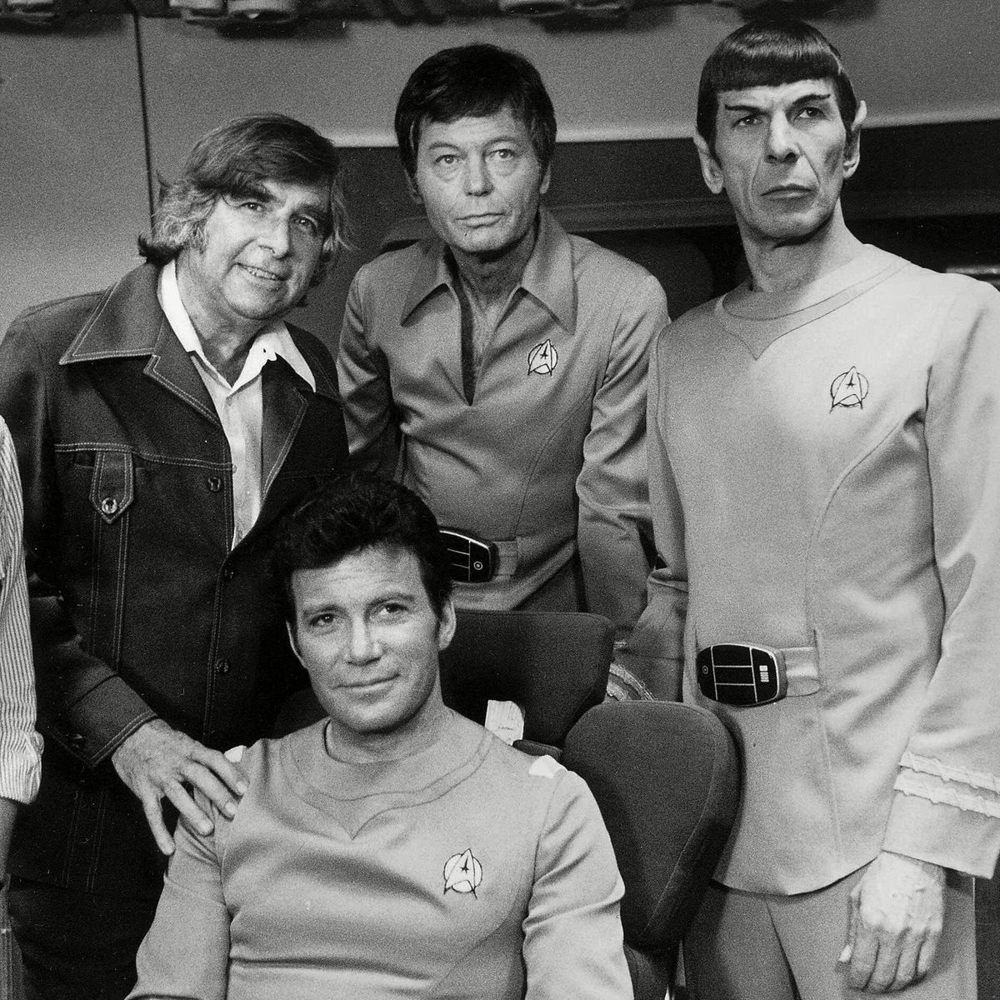

In 1964, Gene Roddenberry presented Star Trek to Desilu Productions, who saw promise in the idea and they signed a three year development contract with Roddenberry, They could not sell the pilot they created called "The Cage" to nbc or cbs, however nbc saw the potential and payed for a second pilot to be produced named "Where no man has gone before" which was the first episode to have william shatner as captain kirk , James Doohan as Chief Engineer Lt. Commander Scott nd Lt. Sulu (George Takei), who served as a physicist on the ship in the second pilot, but subsequently became a helmsman throughout the rest of the series. The only members of the original cast to be carried over where leonard nemoy playing spock and Majel Barret.
he show's production staff included art director Matt Jefferies, who designed the starship Enterprise and most of its interiors.[25] His contributions to the series were honored in the name of the "Jefferies tube", an equipment shaft depicted in various Star Trek series. In addition to working with his brother, John Jefferies, to create the hand-held phaser weapons of Star Trek, Jefferies also developed the set design for the bridge of the Enterprise (which was based on an earlier design by Pato Guzman). Jefferies used his practical experience as an airman during World War II and his knowledge of aircraft design to devise a sleek, functional, and ergonomic bridge layout.
The show really only saw success when it was syndicated a few years later. Syndication is when a show is rerun after it has allready been released. The show gathered a cult following that allowed Gene Roddenberry to help grow the franchise into what it is today.
Source: wikipedia, Star Trek: The Original Series.